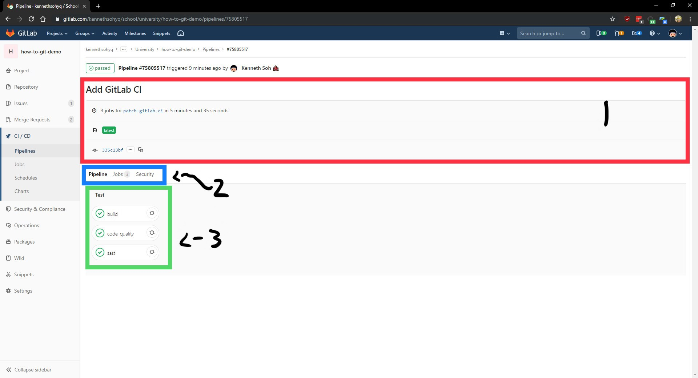

Repository Statistics: Licenses, Total Commits, Branches, Tags, Disk Space Used and Contributors. Hovering on the thin colored line below will provide a list of languages detected in the repository
A dropbown box to swtich branches and a quick shortcut to create a new file/folder/branch/tag/upload file
Some useful buttons (from left to right):
Notification Settings - Modifies your notification settings for this repository
Star - "Favourites" the repository on your profile
Fork - Forks the repository to your own profile
Clone - Provides a SSH/HTTPS URL where you can use to clone the repository. (See Clone Repository for more information)
Latest commit made to the repository's branch
The file list in the currently selected branch as well as the last commit made that modified the file and the time since it is last modified
Some useful tools (from left to right):
History - Views the commit history of the repository and branch
Find File - Finds a file in the repository by the file name
Web IDE - Launches the inbuilt IDE
Download - Provides the ability to download a compressed version of your source code or artifacts
Dropdown box to switch branches
Latest commit made that modified this file
Some useful buttons (left to right):
Find File - Finds a file in the repository by the file name
Blame - View who exactly changed which part of the code in this file at which commit
History - View the entire history of the file
Permalink - A permenant link to the currently viewing file as of this commit
Various buttons to interact with the file (left to right):
Copy Source to Clipboard - Copies the file to the device clipboard
View Raw - View the file directly
Download File - Downloads the file
Lock/Unlock - Locks/Unlocks the file to prevent overwrites by another committer
Edit - Edits the file straight from the website
Web IDE - Launches the inbuilt IDE
Replace - Replace the file with another file
Delete - Deletes the file
Content of file
Preview changes made to the file
Content of the file where you can edit
Commit Message
Branch to commit your changes to
Button to commit or cancel edit
Issue Screen
Button to create a new issue or do bulk modification of existing issues
Switch between open, closed and all issues
Search or filter issues by the various properties
List of all issues
Button to close or create a new issue
Issue title, description, other related issues and ability to edit the issue (pencil icon)
Issue Properties that are relevant (top to bottom):
Assignee - Who is assigned to the issue
Milestone - The current milestone/sprint that this issue belongs to
Time Tracking - The amount of time estimated or spent on this issue
Due Date - When the issue is due on
Labels - Labels assigned to the issue (bug, enhancement etc)
Issue Weight - How important/critical is this issue
Issue Participants - The list of participants in this issue
Issue Notifications - Whether you will be notified about changes to this issue
Issue Reference - A reference to this issue
Comments and changes made to this issue
Box where you can enter comments to the issue as well as close it (if you are the issue creator)
Issue title
Description of the issue
Issue Properties (From top to bottom, left to right):
Assignee - Who to assign to this issue
Milestone - What milestone/sprint does this issue belong to
Labels - Labels assigned to this issue (bug, enhancement, priority etc.)
Issue Weight - How important/crtical is this issue
Due Date - When is this issue due
Button to submit and create this issue or cancel the creation of the issue
Merge Requests (MR) Screen
Button to create a new MR or do bulk modification of MRs
Switch between open, merged, close or all MRs
Search or filter MRs by the various properties
List of all MRs
Button to edit or close the MR
MR Title, Description and branch it is being merged from and to
MR Properties (top to bottom):
Assignee - Who is assigned to the MR
Milestone - Which milestone/sprint this MR is linked to
Time Tracking - The amount of time estimated/spent on this MR
Labels - Labels assigned to the MR (bug, enhancement etc)
Lock MR - Restrict comments to collaborators only
Participants - List of participants involved in this MR
Notifications - Whether to receive GitLab notifications on this MR
CI Status, Approval Status and Mergability Status
Tabs to switch pages (left to right):
Discussion - The screen you see now
Commits - List of commits in the PR
Pipelines - The pipelines that are currently running checks on this MR
Changes - Diff of files that are changed in this MR
Comment and changes made to the issue as well as the box where you can enter comments to the MR as well as close it (if you are the MR creator)
Merge Request Title
Merge Request Description
MR Properties (from top to bottom):
Assignee - Who is assigned to this MR
Milestone - Which milestone/sprint is this MR linked to
Labels - Labels assigned to this MR
Approvers - List of approvals required and approvers (if any)
Blocking MRs - The list of all other MRs blocking this MR that must be merged before this can be merged
The branch you are committing to and from as well as if the commits should be squashed or deleted after merging
The button to create the MR or cancel the creation of it
Issue Boards Screen (It's like Trello/JIRA)
Add issues to the board/column
Issue Column to hold the cards
An issue card
Column statistics like the number of issues and total weights in the column
CI/CD Pipelines
Buttons to manually run the pipeline, clear caches or error check gitlab-ci.yml file
Tabs between the various status of the CI:
All - All Pipelines
Pending - Pipelines that have yet to be ran
Running - Currently running pipeline
Finished - Pipelines that are completed
Branches - The list of branches with pipelines
Tags - The list of tags with pipelines
List of pipelines

Pipeline Information (Commit Title, number and duration of jobs, tags and current commit number)
Tabs to switch between screens:
Pipeline - Shows the pipeline itself
Jobs - Shows more detailed job details
Security - Security assessment of the current commit if available (SAST)
List of all jobs in the pipeline
Information regarding the current job
General pipeline and job information:
How long the job is running
How long can it run for
Who is running this job
Access job artifacts (if any)
Commit number and message
Pipeline list with a selector to switch between the different pipeline stages
List of all jobs in the particular pipeline stage
Web IDE (A exclusive!)
List of currently opened documents
Working area for working with files
Current Branch/MR that is being accessed
List of all files in the repository
Button to commit changes made as well as statistics of files
Button to stage or discard changes to this file
A diff of the file being changed (Left - Old, Right - New)
Quick shortcut buttons to stage or discard all changes
Unstaged changes - These changes are not committed to the repository
Staged changes - These changes will be committed to the repository
Button to commit changes as well as statistics of files modified/staged/unstaged
A diff of the file being changed (Left - Old, Right - New)
Commit message for what you are committing to
Branch to commit to as well as the button to commit the changes you made
NOTE: Please ensure that your changes has been staged (yellow box) before continuing with the commit